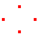
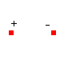
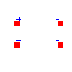
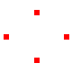
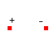
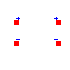
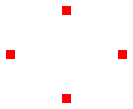
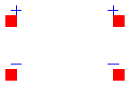

Modelica definition
connector Pin
SI.Voltage vDC "DC potential at the pin";
SI.Voltage vTran "Transient/Small-signal potential at the pin";
SI.Voltage vAC_Re "Small-signal potential at the pin. Real part";
SI.Voltage vAC_Im "Small-signal potential at the pin. Imaginary part";
flow SI.Current iDC "DC current flowing into the pin";
flow SI.Current iTran "Transient current flowing into the pin";
flow SI.Current iAC_Re "Small-signal current flowing into the pin. Real part";
flow SI.Current iAC_Im
"Small-signal current flowing into the pin. Imaginary part";
end Pin;
Modelica definition
connector PowerDissipation
flow SI.Power dissipatedPower "Dissipated power";
end PowerDissipation;

Modelica definition
partial model OnePin
Pin p "(+) node";
end OnePin;

Modelica definition
partial model TwoPin
Pin p "(+) node";
Pin n "(-) node";
end TwoPin;

Modelica definition
partial model MOSFET
Pin d "Drain";
Pin s "Source";
Pin g "Gate";
Pin b "Bulk";
end MOSFET;

Modelica definition
partial model OnePort
extends TwoPin;
protected
SI.Voltage vDC "DC voltage between pines";
SI.Voltage vTran "Transient voltage between pines";
SI.Voltage vAC_Re "Real part of AC small-signal voltage between pines";
SI.Voltage vAC_Im
"Imaginary part of AC small-signal voltage between pines";
SI.Current iDC "DC current";
SI.Current iTran "Transient/Small-signal current";
SI.Current iAC_Re "Small-signal current. Real part";
SI.Current iAC_Im "Small-signal current. Imaginary part";
equation
// i, v sign criterion: Positive current flows from
// the (+) node through the part to the (-) node
{iDC,iTran,iAC_Re,iAC_Im} = {p.iDC,p.iTran,p.iAC_Re,p.iAC_Im};
{iDC,iTran,iAC_Re,iAC_Im} = -{n.iDC,n.iTran,n.iAC_Re,n.iAC_Im};
{vDC,vTran,vAC_Re,vAC_Im} = {p.vDC,p.vTran,p.vAC_Re,p.vAC_Im} - {n.vDC,n.
vTran,n.vAC_Re,n.vAC_Im};
end OnePort;

Modelica definition
partial model TwoPort
protected
SI.Voltage vDC1 "DC Voltage drop over the left port";
SI.Voltage vTran1 "Transient voltage drop over the left port";
SI.Voltage vAC_Re1
"Real part of AC small-signal voltage drop over the left port";
SI.Voltage vAC_Im1
"Imaginary part of AC small-signal voltage drop over the left port";
SI.Current iDC1
"DC current flowing from pos. to neg. pin of the left port";
SI.Current iTran1
"Transient/Small-signal current flowing from pos. to neg. pin of the left port";
SI.Current iAC_Re1
"Small-signal current flowing from pos. to neg. pin of the left port. Real part";
SI.Current iAC_Im1
"Small-signal current flowing from pos. to neg. pin of the left port. Imaginary part";
SI.Voltage vDC2 "DC Voltage drop over the right port";
SI.Voltage vTran2 "Transient voltage drop over the right port";
SI.Voltage vAC_Re2
"Real part of AC small-signal voltage drop over the right port";
SI.Voltage vAC_Im2
"Imaginary part of AC small-signal voltage drop over the right port";
SI.Current iDC2
"DC current flowing from pos. to neg. pin of the right port";
SI.Current iTran2
"Transient/Small-signal current flowing from pos. to neg. pin of the right port";
SI.Current iAC_Re2
"Small-signal current flowing from pos. to neg. pin of the right port. Real part";
SI.Current iAC_Im2
"Small-signal current flowing from pos. to neg. pin of the right port. Imaginary part";
public
Pin p1 "Positive pin of the left port";
Pin n1 "Negative pin of the left port";
Pin p2 "Positive pin of the right port";
Pin n2 "Negative pin of the right port";
equation
// i, v sign criterion: Positive current flows from
// the (+) node through the part to the (-) node
{iDC1,iTran1,iAC_Re1,iAC_Im1} = {p1.iDC,p1.iTran,p1.iAC_Re,p1.iAC_Im};
{iDC1,iTran1,iAC_Re1,iAC_Im1} = -{n1.iDC,n1.iTran,n1.iAC_Re,n1.iAC_Im};
{vDC1,vTran1,vAC_Re1,vAC_Im1} = {p1.vDC,p1.vTran,p1.vAC_Re,p1.vAC_Im} - {n1.
vDC,n1.vTran,n1.vAC_Re,n1.vAC_Im};
{iDC2,iTran2,iAC_Re2,iAC_Im2} = {p2.iDC,p2.iTran,p2.iAC_Re,p2.iAC_Im};
{iDC2,iTran2,iAC_Re2,iAC_Im2} = -{n2.iDC,n2.iTran,n2.iAC_Re,n2.iAC_Im};
{vDC2,vTran2,vAC_Re2,vAC_Im2} = {p2.vDC,p2.vTran,p2.vAC_Re,p2.vAC_Im} - {n2.
vDC,n2.vTran,n2.vAC_Re,n2.vAC_Im};
end TwoPort;
HTML-documentation generated by Dymola Tue Oct 14 18:26:31 2003
.